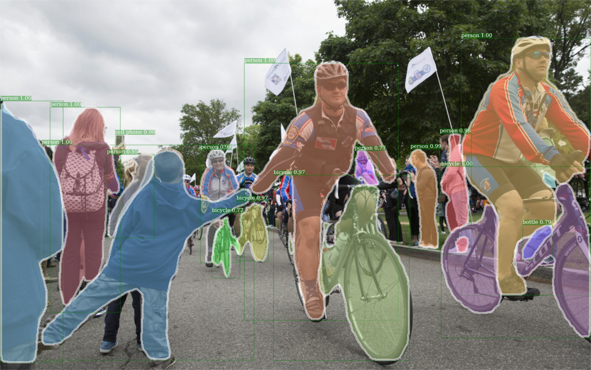
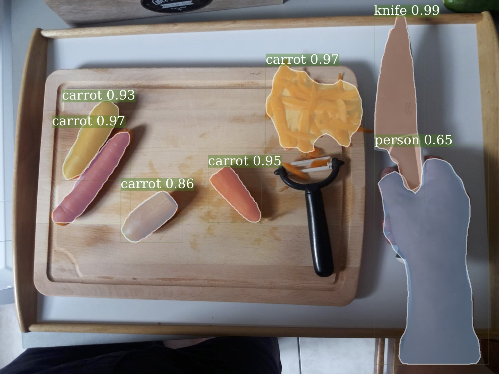

Complementary Mask Data
for VLOG and EPIC Kitchen
|  |  |
|---|
Description
Running Mask-RCNN on large scale video datasets could be time consuming.
We are happy to release object masks predicted by Mask-RCNN on each frame for the VLOG and the EPIC Kitchen
datasets.
So far we are releasing object masks with a resolution of 100x100 and thresholded with a minimum confidence
of 0.5.
We hope to release higher resolution in a near future.
- VLOG masks (8.5G - 46G uncompressed)
- EPIC-AR masks (1G - 9G uncompressed)
Bibtex
In case of usage of our object masks predictions please cite our ECCV'2018 paper :
@InProceedings{Baradel_2018_ECCV,
author = {Baradel, Fabien and
Neverova, Natalia and
Wolf, Christian and
Mille, Julien and
Mori, Greg},
title = {Object Level Visual Reasoning in Videos},
booktitle = {ECCV},
month = {June},
year = {2018}
}